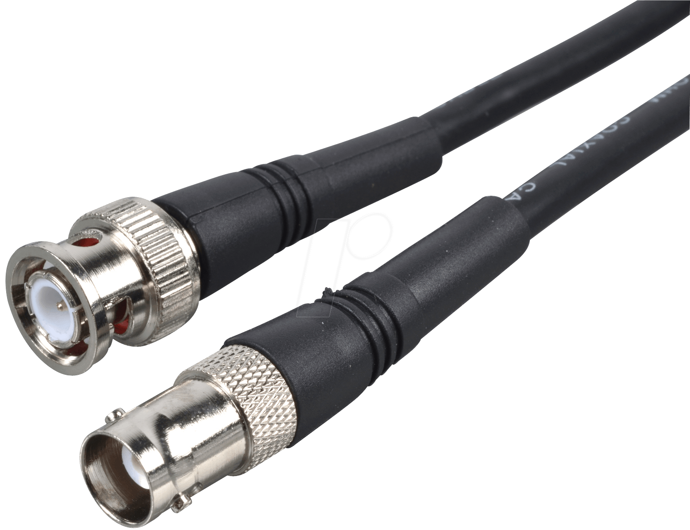
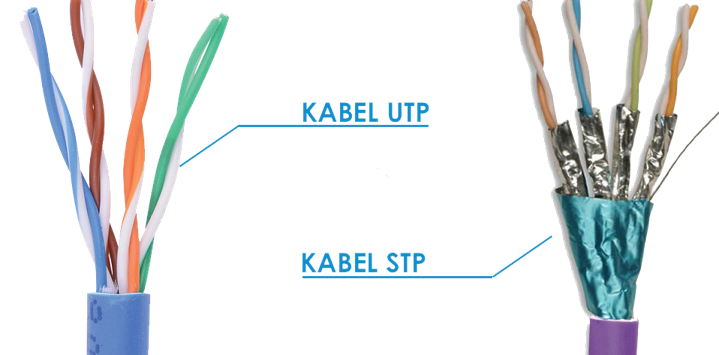
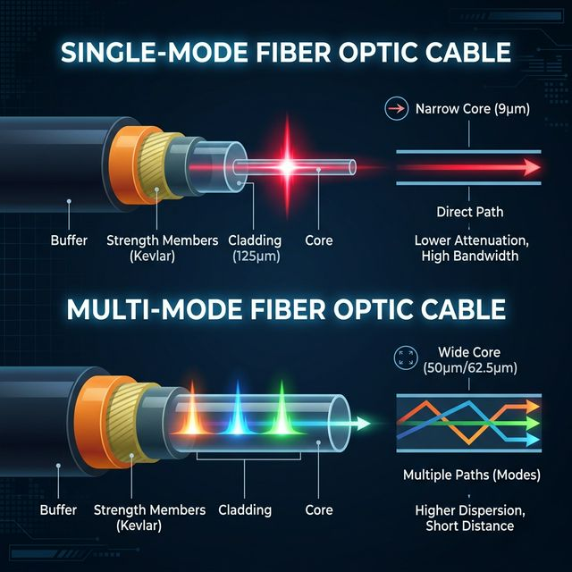
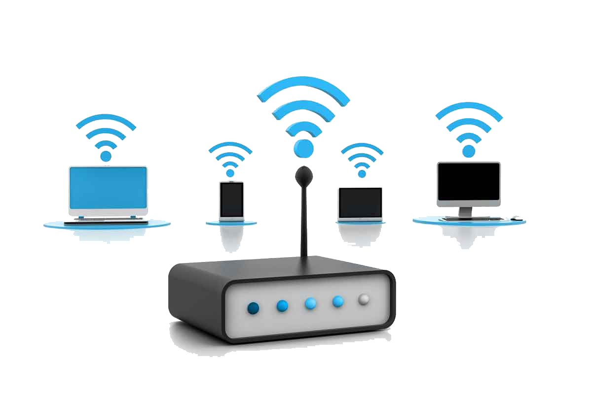
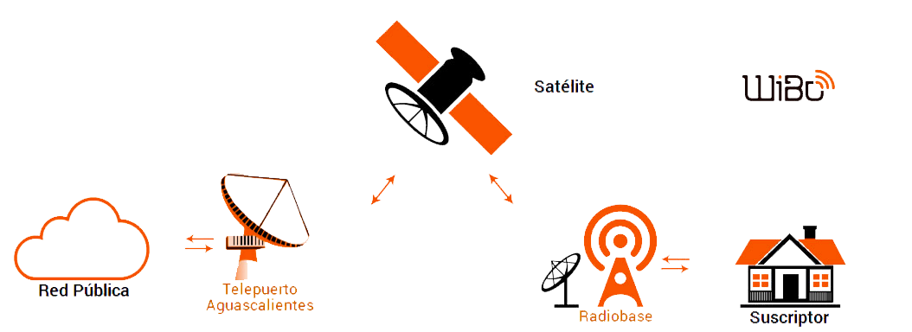
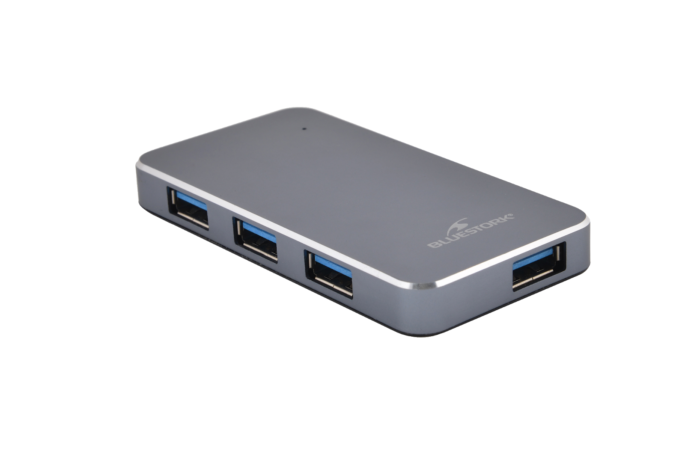
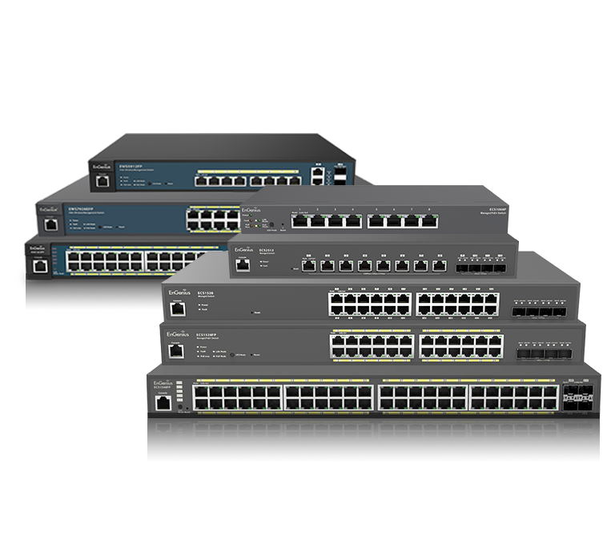
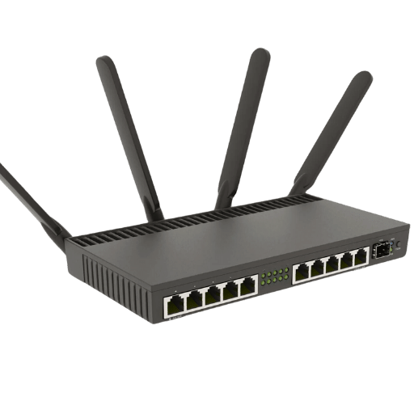
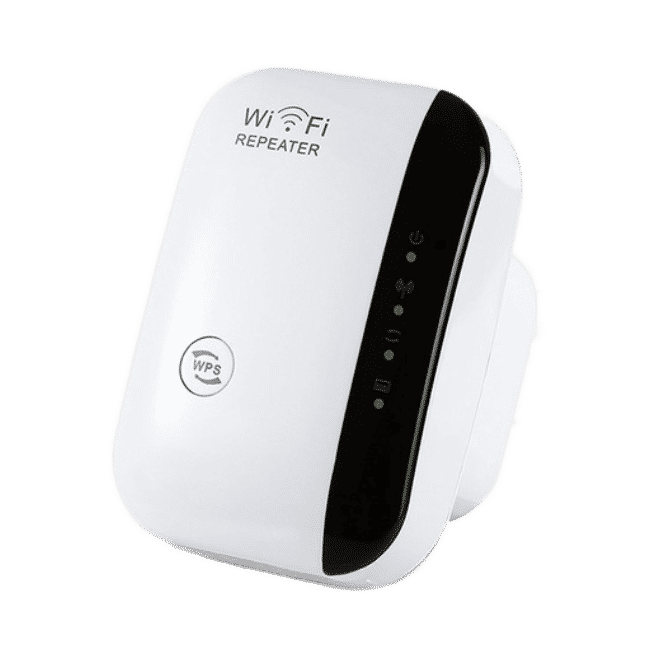
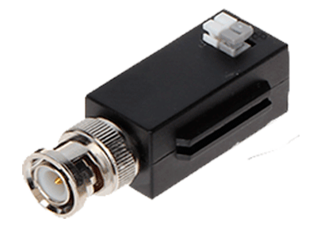

Infraestructura Física
El Camino y los Directores del Tráfico
Para que una red funcione correctamente es indispensable definir por dónde viajarán los datos y qué dispositivos se encargarán de dirigir ese tráfico con precisión.
Una configuración deficiente de cables puede generar cuellos de botella que degradan el rendimiento incluso de los equipos más avanzados.
1. Medios de Transmisión
Medios Guiados (Alámbricos)
Conductores físicos que proporcionan inmunidad contra interferencias del entorno y latencias consistentes. Son la columna vertebral de cualquier red corporativa.
Cable Coaxial
Compuesto por un conductor central de cobre rodeado de aislante dieléctrico y una malla metálica de blindaje. Su estructura concéntrica le otorga excelente resistencia a interferencias electromagnéticas.
- Velocidades de hasta 10 Mbps en redes antiguas (Ethernet 10BASE2 / 10BASE5).
- Distancias de hasta 500 metros sin repetidores.
- Uso actual: redes de televisión por cable (CATV) e Internet HFC.

Par Trenzado — UTP y STP
El medio cableado más utilizado en redes LAN. Consiste en pares de hilos de cobre entrelazados en espiral para reducir la interferencia entre pares (diafonía). Existen dos variantes principales:

UTP (sin blindaje)
Más económico y fácil de instalar. Suficiente para la mayoría de entornos de oficina. Conector RJ-45. Distancia máxima: 100 m por segmento.
STP (con blindaje)
Cada par envuelto en lámina metálica protectora. Mayor resistencia en entornos con alta interferencia (fábricas, hospitales). Más costoso y rígido.
Categorías de UTP: Cat5e (hasta 1 Gbps) — Cat6 (hasta 10 Gbps a 55m) — Cat6A (hasta 10 Gbps a 100m) — Cat7 y Cat8 (para centros de datos de altísima velocidad).
Fibra Óptica
Transmite datos mediante pulsos de luz láser a través de filamentos de vidrio del grosor de un cabello humano. La señal viaja por reflexión total interna, sin degradarse en largas distancias.

Monomodo (SMF)
Núcleo estrecho (8–10 micras). Transmite una sola señal con mínima dispersión. Ideal para largas distancias (cientos de km). Usada en redes WAN y enlaces troncales.
Multimodo (MMF)
Núcleo más ancho (50–62.5 micras). Permite múltiples rayos de luz simultáneos. Distancias cortas (hasta 2 km). Usada en redes LAN y centros de datos.
- Velocidades de transmisión de hasta varios Tbps.
- Inmune a interferencias electromagnéticas.
- Prácticamente imposible de interceptar sin cortar físicamente la fibra.
Medios No Guiados (Inalámbricos)
Los medios no guiados transmiten datos mediante ondas electromagnéticas que se propagan libremente por el aire o el espacio, sin necesidad de un conductor físico.
Wi-Fi (IEEE 802.11)
Tecnología inalámbrica más extendida para redes LAN. Opera en las bandas de 2.4 GHz, 5 GHz y 6 GHz (Wi-Fi 6E). Es el estándar IEEE 802.11 en sus distintas versiones.

Estándares principales: 802.11n (Wi-Fi 4) hasta 600 Mbps · 802.11ac (Wi-Fi 5) hasta varios Gbps · 802.11ax (Wi-Fi 6/6E) hasta 9.6 Gbps teóricos con mayor eficiencia en entornos congestionados. Alcance típico de 30–100 m en interiores.
Microondas
Ondas electromagnéticas de alta frecuencia (1–300 GHz) para transmitir datos a larga distancia en línea recta. Usadas tanto en enlaces terrestres como satelitales.
- Terrestres: Antenas parabólicas en torres o edificios, con línea de visión directa. Cubren 30–80 km por enlace.
- Satelitales: La señal viaja desde tierra a satélites y de vuelta a la superficie.
- Sensibles a la lluvia intensa (rain fade) en frecuencias altas. Requieren alineación precisa de antenas.
Satélites de Comunicación
Orbitan la Tierra y retransmiten señales entre puntos del planeta. Son la solución para zonas sin infraestructura terrestre viable.

GEO (~36,000 km)
Alta latencia (~600 ms), amplia cobertura. TV satelital y telecomunicaciones tradicionales.
MEO (5,000–20,000 km)
Latencia moderada. GPS y algunos sistemas de Internet.
LEO (160–2,000 km)
Baja latencia (~20–40 ms). Constelaciones modernas: Starlink, OneWeb, Amazon Kuiper.
Bluetooth
Tecnología inalámbrica de corto alcance (banda 2.4 GHz) para redes PAN personales. Bluetooth 5.x alcanza hasta 2 Mbps y 200 metros, con consumo energético muy bajo (BLE). Uso: audífonos, teclados, wearables, transferencia entre dispositivos.
Infrarrojo (IrDA)
Utiliza ondas de luz infrarroja para transmitir datos a muy corta distancia (generalmente menos de 1 metro). Requiere línea de visión directa entre emisor y receptor. Velocidades de hasta 4 Mbps. Prácticamente en desuso, reemplazado por Bluetooth. Uso actual: controles remotos de TV y algunos sensores industriales.
2. Directores de Tráfico (Hardware)
Hub (Concentrador) — Capa 1
El hub es el dispositivo de interconexión más básico y primitivo. Cuando recibe una señal por uno de sus puertos, la repite y envía por todos los demás puertos simultáneamente, sin importar el destinatario real. Todos los dispositivos comparten el mismo dominio de colisión, lo que degrada el rendimiento conforme crece la red.

Estado actual: Prácticamente obsoleto. Sustituido completamente por el switch en redes modernas. Solo se usa en entornos muy básicos o para análisis de redes (sniffing).
Switch (Conmutador) — Capa 2 / 3
Es el dispositivo estrella de las redes LAN modernas. Aprende y memoriza las direcciones MAC de los equipos en su tabla CAM. Cuando recibe un paquete, lo envía únicamente al puerto del destinatario real, eliminando colisiones y haciendo la comunicación mucho más eficiente que el hub.

- Crea dominios de colisión independientes por cada puerto.
- Disponible en versiones administrables (con VLANs, QoS, seguridad) y no administrables.
- Modelos avanzados (Capa 3) pueden enrutar paquetes además de conmutar tramas.
Router (Enrutador) — Capa 3
Dispositivo encargado de interconectar distintas redes y dirigir el tráfico entre ellas usando direcciones IP. Mantiene tablas de enrutamiento que describe las rutas disponibles. Puede aprender rutas de forma estática (manual) o dinámica (protocolos OSPF, BGP, RIP).

- Implementa NAT (Network Address Translation) para compartir una IP pública.
- Segmenta dominios de broadcast, mejorando el rendimiento y la seguridad.
- Selecciona la mejor ruta disponible de forma dinámica ante fallos de enlace.
Punto de Acceso Inalámbrico (AP)
Dispositivo que extiende una red cableada existente hacia el dominio inalámbrico (Wi-Fi). Permite la conexión de múltiples dispositivos móviles sin necesidad de cables físicos. Opera en la Capa 2 del modelo OSI y se conecta al switch principal mediante un cable UTP.
- Indispensable en redes empresariales con gran número de usuarios móviles.
- Los AP modernos soportan los estándares Wi-Fi 6 y Wi-Fi 6E (802.11ax).
Gateway (Puerta de Enlace)
Dispositivo o software que actúa como punto de entrada y salida entre dos redes con protocolos distintos. Traduce y convierte los formatos de datos para que puedan comunicarse redes heterogéneas. Es el elemento que permite que una red local acceda a Internet.
- En redes domésticas, el router generalmente cumple también la función de gateway.
- En entornos empresariales, puede ser un servidor dedicado con reglas de conversión y seguridad.
Bridge (Puente) — Capa 2
Interconecta dos segmentos de red del mismo tipo y filtra el tráfico entre ellos basándose en direcciones MAC. Divide la red en dos dominios de colisión independientes. Si el destinatario está en el mismo segmento que el emisor, bloquea el frame; si está al otro lado, lo reenvía. Funcionalmente reemplazado por los switches modernos.
Repetidor — Capa 1
Recibe una señal debilitada o distorsionada, la regenera completamente y la retransmite para que pueda recorrer distancias mayores. No analiza ni modifica el contenido, tampoco segmenta dominios de colisión. Uso actual: amplificadores de señal Wi-Fi y extensión de redes Ethernet de largo alcance.

Transceptor (Transceiver) — Capa 1
Dispositivo que puede tanto transmitir como recibir señales, combinando ambas funciones en una sola unidad. En redes profesionales son fundamentales para convertir señales entre diferentes tipos de medios de transmisión.

- SFP (Small Form-factor Pluggable): Módulos intercambiables en switches y routers para conectar fibra óptica o cobre sin reemplazar el equipo completo.
- Transceptores ópticos: Convierten señales eléctricas en pulsos de luz para fibra óptica.
- Transceptores Wi-Fi/Bluetooth: Combinan transmisor y receptor de radiofrecuencia en una sola tarjeta.